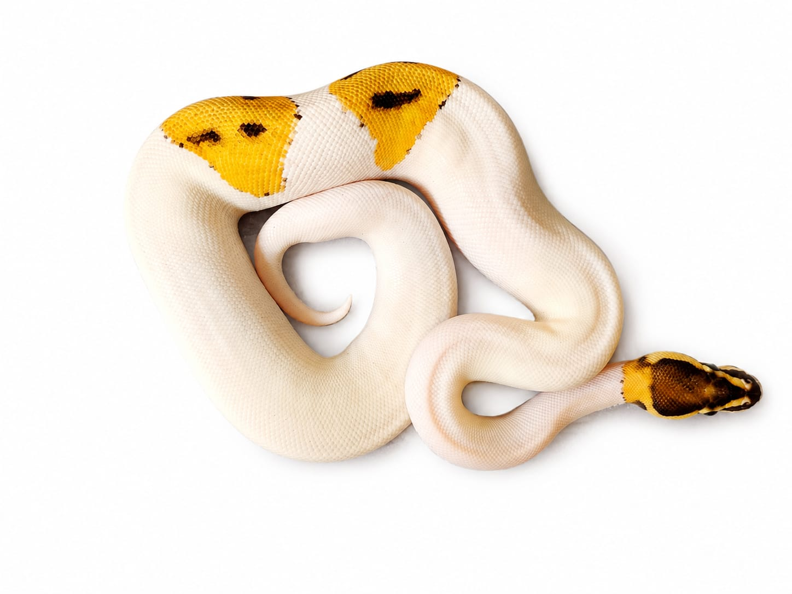

Especie: Ball Python
Sexo: Macho
Morph: Pied, Fire, Orange Dream, Poss Het Albino
Año: 2025
Peso: 194 g
Origen: CODE
Procedencia: PIMVS YAHUI by César Rico
Estado: Juvenil
Combina un diseño recesivo visual muy cotizado (Pied) con genes Fire y Orange Dream que intensifican el color y modifican el patrón.
Genes dominantes incompletos: Fire y Orange Dream.
Gen recesivo visual: Pied.
Posible portador del gen Albino.
Forma parte del Archivo Genético CODE como registro documental permanente.